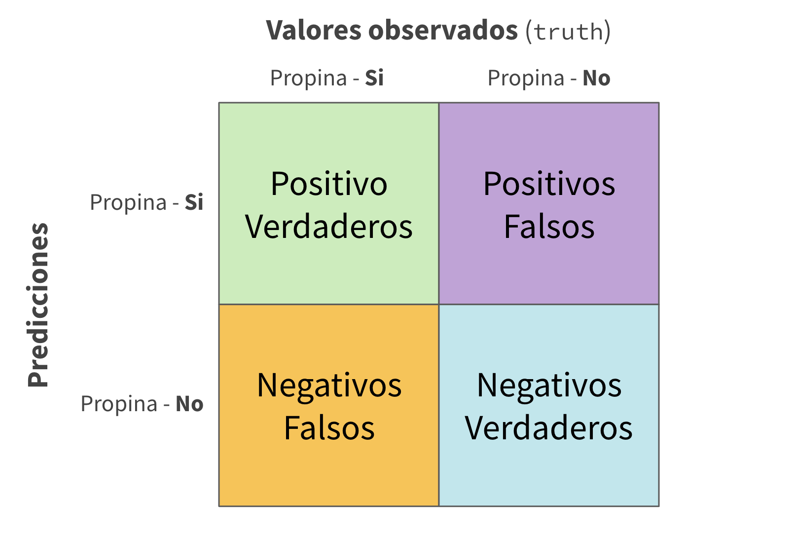
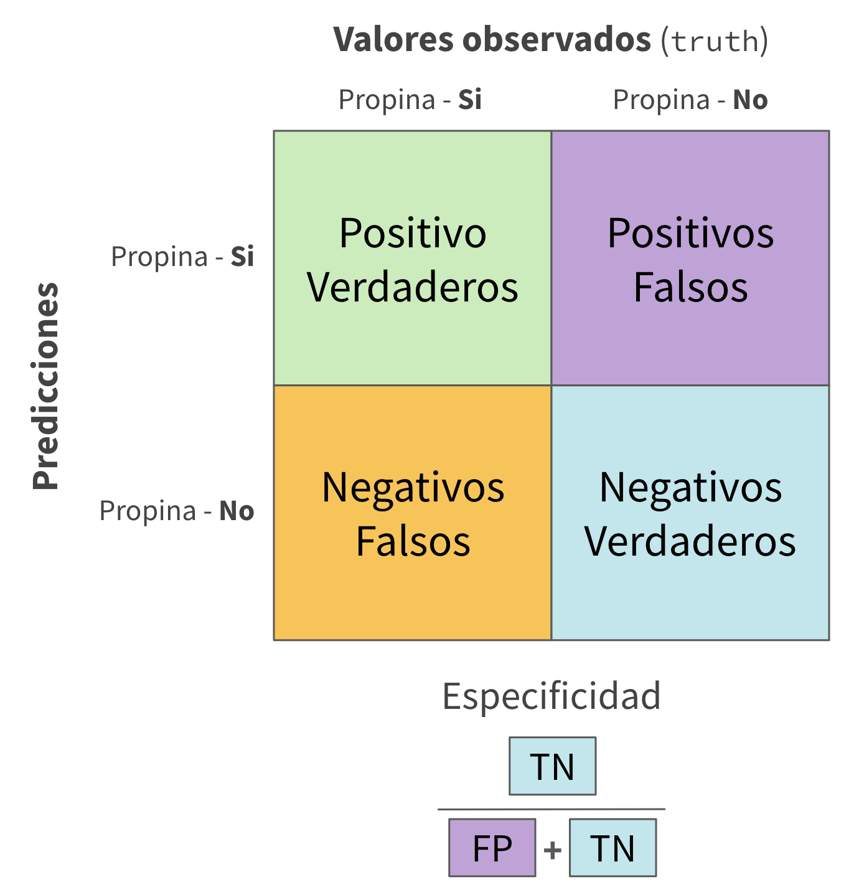

augment(taxi_ajustado, new_data = taxi_entrenar) %>%
relocate(propina, .pred_class, .pred_si, .pred_no)
#> # A tibble: 8,000 × 10
#> propina .pred_class .pred_si .pred_no distancia compania local dia mes
#> <fct> <fct> <dbl> <dbl> <dbl> <fct> <fct> <fct> <fct>
#> 1 si si 0.967 0.0333 17.2 Chicago In… no Jue Feb
#> 2 si si 0.935 0.0646 0.88 City Servi… si Jue Mar
#> 3 si si 0.967 0.0333 18.1 otra no Lun Feb
#> 4 si si 0.949 0.0507 12.2 Chicago In… no Dom Mar
#> 5 si si 0.821 0.179 0.94 Sun Taxi si Sab Abr
#> 6 si si 0.967 0.0333 17.5 Flash Cab no Vie Mar
#> 7 si si 0.967 0.0333 17.7 otra no Dom Ene
#> 8 si si 0.938 0.0616 1.85 Taxicab In… no Vie Abr
#> 9 si si 0.938 0.0616 0.53 Sun Taxi no Mar Mar
#> 10 si si 0.931 0.0694 6.65 Taxicab In… no Dom Abr
#> # ℹ 7,990 more rows
#> # ℹ 1 more variable: hora <int>4 - Evaluar modelos
Introducciendo Tidymodels
Matriz de confusión 


Matriz de confusión 
Matriz de confusión 
Mediciones de la calidad del modelo 

El riesgo de concentrarse en la exactitud 
Hay que tener cuidado utilizando exactitud (accuracy()) ya que nos puede dar “buenos” resultado se predecimos con datos que no están balanceados
Mediciones de la calidad del modelo 
Mediciones de la calidad del modelo 

Mediciones de la calidad del modelo 
Para combinar multiples cálculos en una tabla, usa metric_set()
taxi_metrics <- metric_set(accuracy, specificity, sensitivity)
augment(taxi_ajustado, new_data = taxi_entrenar) %>%
taxi_metrics(truth = propina, estimate = .pred_class)
#> # A tibble: 3 × 3
#> .metric .estimator .estimate
#> <chr> <chr> <dbl>
#> 1 accuracy binary 0.928
#> 2 specificity binary 0.130
#> 3 sensitivity binary 0.994Mediciones de la calidad del modelo 
taxi_metrics <- metric_set(accuracy, specificity, sensitivity)
augment(taxi_ajustado, new_data = taxi_entrenar) %>%
group_by(local) %>%
taxi_metrics(truth = propina, estimate = .pred_class)
#> # A tibble: 6 × 4
#> local .metric .estimator .estimate
#> <fct> <chr> <chr> <dbl>
#> 1 si accuracy binary 0.898
#> 2 no accuracy binary 0.935
#> 3 si specificity binary 0.169
#> 4 no specificity binary 0.116
#> 5 si sensitivity binary 0.987
#> 6 no sensitivity binary 0.996Curvas ROC 
# Assumes _first_ factor level is event; there are options to change that
augment(taxi_ajustado, new_data = taxi_entrenar) %>%
roc_curve(truth = propina, .pred_si) %>%
slice(1, 20, 50)
#> # A tibble: 3 × 3
#> .threshold specificity sensitivity
#> <dbl> <dbl> <dbl>
#> 1 -Inf 0 1
#> 2 0.783 0.209 0.981
#> 3 1 1 0.00135
augment(taxi_ajustado, new_data = taxi_entrenar) %>%
roc_auc(truth = propina, .pred_si)
#> # A tibble: 1 × 3
#> .metric .estimator .estimate
#> <chr> <chr> <dbl>
#> 1 roc_auc binary 0.691Gráfica de curvas ROC 

Tu turno

Calcule y gráfique una curva ROC con su modelo
¿Cuales son los datos que se utilizaron para esta curva ROC?
05:00
Los peligros del sobreajustar ⚠️

Los peligros del sobreajustar ⚠️

Los peligros del sobreajustar ⚠️ 
taxi_ajustado %>%
augment(taxi_entrenar)
#> # A tibble: 8,000 × 10
#> .pred_class .pred_si .pred_no propina distancia compania local dia mes
#> <fct> <dbl> <dbl> <fct> <dbl> <fct> <fct> <fct> <fct>
#> 1 si 0.967 0.0333 si 17.2 Chicago In… no Jue Feb
#> 2 si 0.935 0.0646 si 0.88 City Servi… si Jue Mar
#> 3 si 0.967 0.0333 si 18.1 otra no Lun Feb
#> 4 si 0.949 0.0507 si 12.2 Chicago In… no Dom Mar
#> 5 si 0.821 0.179 si 0.94 Sun Taxi si Sab Abr
#> 6 si 0.967 0.0333 si 17.5 Flash Cab no Vie Mar
#> 7 si 0.967 0.0333 si 17.7 otra no Dom Ene
#> 8 si 0.938 0.0616 si 1.85 Taxicab In… no Vie Abr
#> 9 si 0.938 0.0616 si 0.53 Sun Taxi no Mar Mar
#> 10 si 0.931 0.0694 si 6.65 Taxicab In… no Dom Abr
#> # ℹ 7,990 more rows
#> # ℹ 1 more variable: hora <int>A esto le llamamos “resubstitución” ó “repredecir en los datos de entrenamiento”
Los peligros del sobreajustar ⚠️ 
A esto le llamamos “resubstitución de la estimación”
Los peligros del sobreajustar ⚠️ 
Los peligros del sobreajustar ⚠️ 
⚠️ Acuerdate que estamos demonstrando el sobreajuste
⚠️ No utilizes el set the prueba sino hasta el fin de tu analisis
Tu turno
Usa augment() y una función de métrica para calcular una métrica de classificación, por ejemplo brier_class()
Calcula las métricas para los datos de entrenamiento y de prueba para demonstrar el sobreajuste
Nota la evidencia de sobreajuste ⚠️
05:00
Los peligros del sobreajustar ⚠️ 
¿Que tal si queremos comparar más modelos?
…y comparar configuraciones para los modelos?
Y tambien queremos saber si las diferencias son importantes
Validación cruzada

Validación cruzada

Tu turno
Si usamos 10 plieges (folds), cual es el porcentaje de datos de entrenamiento
- cuantos terminan en análisis
- cuantos terminan en evaluación (assesment)
…para cada pliege?

03:00
Validación cruzada 

vfold_cv(taxi_entrenar)
#> # 10-fold cross-validation
#> # A tibble: 10 × 2
#> splits id
#> <list> <chr>
#> 1 <split [7200/800]> Fold01
#> 2 <split [7200/800]> Fold02
#> 3 <split [7200/800]> Fold03
#> 4 <split [7200/800]> Fold04
#> 5 <split [7200/800]> Fold05
#> 6 <split [7200/800]> Fold06
#> 7 <split [7200/800]> Fold07
#> 8 <split [7200/800]> Fold08
#> 9 <split [7200/800]> Fold09
#> 10 <split [7200/800]> Fold10Validación cruzada 
¿Que hay en este?
Validación cruzada 
Validación cruzada 
vfold_cv(taxi_entrenar, strata = propina)
#> # 10-fold cross-validation using stratification
#> # A tibble: 10 × 2
#> splits id
#> <list> <chr>
#> 1 <split [7200/800]> Fold01
#> 2 <split [7200/800]> Fold02
#> 3 <split [7200/800]> Fold03
#> 4 <split [7200/800]> Fold04
#> 5 <split [7200/800]> Fold05
#> 6 <split [7200/800]> Fold06
#> 7 <split [7200/800]> Fold07
#> 8 <split [7200/800]> Fold08
#> 9 <split [7200/800]> Fold09
#> 10 <split [7200/800]> Fold10Estratificar usualmente ayuda, y con pocos malas consecuencias
Validación cruzada 
Usaremos esto:
set.seed(123)
taxi_plieges <- vfold_cv(taxi_entrenar, v = 10, strata = propina)
taxi_plieges
#> # 10-fold cross-validation using stratification
#> # A tibble: 10 × 2
#> splits id
#> <list> <chr>
#> 1 <split [7200/800]> Fold01
#> 2 <split [7200/800]> Fold02
#> 3 <split [7200/800]> Fold03
#> 4 <split [7200/800]> Fold04
#> 5 <split [7200/800]> Fold05
#> 6 <split [7200/800]> Fold06
#> 7 <split [7200/800]> Fold07
#> 8 <split [7200/800]> Fold08
#> 9 <split [7200/800]> Fold09
#> 10 <split [7200/800]> Fold10Especifica la semilla (seed) cuando estas creando remuestreos
Evaluando la calidad del modelo 

Podemos medir correctamente la la calidad del modelo usando solo los datos de entrenamiento 🎉
Comparando las métricas 
¿Que diferencia hay entre las métricas usando los datos de remuestreo, y usando los datos de entrenamiento y prueba?
El ROC AUC antes era:
- 0.69 para el set the entrenamiento
- 0.64 para el set the prueba
Acuerdate que:
⚠️ Los datos de entrenamiento da métricas demasiado optimísticas
⚠️ Los datos de prueba son valiosos
Evaluando la calidad del modelo 
ctrl_taxi <- control_resamples(save_pred = TRUE)
taxi_res <- fit_resamples(arbol_flujo, taxi_plieges, control = ctrl_taxi)
taxi_res
#> # Resampling results
#> # 10-fold cross-validation using stratification
#> # A tibble: 10 × 5
#> splits id .metrics .notes .predictions
#> <list> <chr> <list> <list> <list>
#> 1 <split [7200/800]> Fold01 <tibble [2 × 4]> <tibble [0 × 3]> <tibble>
#> 2 <split [7200/800]> Fold02 <tibble [2 × 4]> <tibble [0 × 3]> <tibble>
#> 3 <split [7200/800]> Fold03 <tibble [2 × 4]> <tibble [0 × 3]> <tibble>
#> 4 <split [7200/800]> Fold04 <tibble [2 × 4]> <tibble [0 × 3]> <tibble>
#> 5 <split [7200/800]> Fold05 <tibble [2 × 4]> <tibble [0 × 3]> <tibble>
#> 6 <split [7200/800]> Fold06 <tibble [2 × 4]> <tibble [0 × 3]> <tibble>
#> 7 <split [7200/800]> Fold07 <tibble [2 × 4]> <tibble [0 × 3]> <tibble>
#> 8 <split [7200/800]> Fold08 <tibble [2 × 4]> <tibble [0 × 3]> <tibble>
#> 9 <split [7200/800]> Fold09 <tibble [2 × 4]> <tibble [0 × 3]> <tibble>
#> 10 <split [7200/800]> Fold10 <tibble [2 × 4]> <tibble [0 × 3]> <tibble>Evaluando la calidad del modelo 
# Guarde los resultados de las evaluaciones
taxi_preds <- collect_predictions(taxi_res)
taxi_preds
#> # A tibble: 8,000 × 7
#> id .pred_si .pred_no .row .pred_class propina .config
#> <chr> <dbl> <dbl> <int> <fct> <fct> <chr>
#> 1 Fold01 0.938 0.0615 14 si si Preprocessor1_Model1
#> 2 Fold01 0.946 0.0544 19 si si Preprocessor1_Model1
#> 3 Fold01 0.973 0.0269 33 si si Preprocessor1_Model1
#> 4 Fold01 0.903 0.0971 43 si si Preprocessor1_Model1
#> 5 Fold01 0.973 0.0269 74 si si Preprocessor1_Model1
#> 6 Fold01 0.903 0.0971 103 si si Preprocessor1_Model1
#> 7 Fold01 0.915 0.0851 104 si no Preprocessor1_Model1
#> 8 Fold01 0.903 0.0971 124 si si Preprocessor1_Model1
#> 9 Fold01 0.667 0.333 126 si si Preprocessor1_Model1
#> 10 Fold01 0.949 0.0510 128 si si Preprocessor1_Model1
#> # ℹ 7,990 more rowsEvaluando la calidad del modelo 
taxi_preds %>%
group_by(id) %>%
taxi_metrics(truth = propina, estimate = .pred_class)
#> # A tibble: 30 × 4
#> id .metric .estimator .estimate
#> <chr> <chr> <chr> <dbl>
#> 1 Fold01 accuracy binary 0.905
#> 2 Fold02 accuracy binary 0.925
#> 3 Fold03 accuracy binary 0.926
#> 4 Fold04 accuracy binary 0.915
#> 5 Fold05 accuracy binary 0.902
#> 6 Fold06 accuracy binary 0.912
#> 7 Fold07 accuracy binary 0.906
#> 8 Fold08 accuracy binary 0.91
#> 9 Fold09 accuracy binary 0.918
#> 10 Fold10 accuracy binary 0.931
#> # ℹ 20 more rows¿Donde estan los modelos que ajustamos? 
taxi_res
#> # Resampling results
#> # 10-fold cross-validation using stratification
#> # A tibble: 10 × 5
#> splits id .metrics .notes .predictions
#> <list> <chr> <list> <list> <list>
#> 1 <split [7200/800]> Fold01 <tibble [2 × 4]> <tibble [0 × 3]> <tibble>
#> 2 <split [7200/800]> Fold02 <tibble [2 × 4]> <tibble [0 × 3]> <tibble>
#> 3 <split [7200/800]> Fold03 <tibble [2 × 4]> <tibble [0 × 3]> <tibble>
#> 4 <split [7200/800]> Fold04 <tibble [2 × 4]> <tibble [0 × 3]> <tibble>
#> 5 <split [7200/800]> Fold05 <tibble [2 × 4]> <tibble [0 × 3]> <tibble>
#> 6 <split [7200/800]> Fold06 <tibble [2 × 4]> <tibble [0 × 3]> <tibble>
#> 7 <split [7200/800]> Fold07 <tibble [2 × 4]> <tibble [0 × 3]> <tibble>
#> 8 <split [7200/800]> Fold08 <tibble [2 × 4]> <tibble [0 × 3]> <tibble>
#> 9 <split [7200/800]> Fold09 <tibble [2 × 4]> <tibble [0 × 3]> <tibble>
#> 10 <split [7200/800]> Fold10 <tibble [2 × 4]> <tibble [0 × 3]> <tibble>🗑️
Bootstrapping 
set.seed(3214)
bootstraps(taxi_entrenar)
#> # Bootstrap sampling
#> # A tibble: 25 × 2
#> splits id
#> <list> <chr>
#> 1 <split [8000/2902]> Bootstrap01
#> 2 <split [8000/2916]> Bootstrap02
#> 3 <split [8000/3004]> Bootstrap03
#> 4 <split [8000/2979]> Bootstrap04
#> 5 <split [8000/2961]> Bootstrap05
#> 6 <split [8000/2962]> Bootstrap06
#> 7 <split [8000/3026]> Bootstrap07
#> 8 <split [8000/2926]> Bootstrap08
#> 9 <split [8000/2972]> Bootstrap09
#> 10 <split [8000/2972]> Bootstrap10
#> # ℹ 15 more rowsTu turno
Crea un:
- Set de validación cruzada tipo Monte Carlo
- Set de validación
No te olvides de usar set.seed()
05:00
Validación cruzada tipo Monte Carlo 
set.seed(322)
mc_cv(taxi_entrenar, times = 10)
#> # Monte Carlo cross-validation (0.75/0.25) with 10 resamples
#> # A tibble: 10 × 2
#> splits id
#> <list> <chr>
#> 1 <split [6000/2000]> Resample01
#> 2 <split [6000/2000]> Resample02
#> 3 <split [6000/2000]> Resample03
#> 4 <split [6000/2000]> Resample04
#> 5 <split [6000/2000]> Resample05
#> 6 <split [6000/2000]> Resample06
#> 7 <split [6000/2000]> Resample07
#> 8 <split [6000/2000]> Resample08
#> 9 <split [6000/2000]> Resample09
#> 10 <split [6000/2000]> Resample10Set de validación 
Un set de validación es solamente otro tipo de remuestreo
Crear un modelo de bosque aleatorio 

Crear un modelo de bosque aleatorio 

rf_wflow <- workflow(propina ~ ., rf_spec)
rf_wflow
#> ══ Workflow ══════════════════════════════════════════════════════════
#> Preprocessor: Formula
#> Model: rand_forest()
#>
#> ── Preprocessor ──────────────────────────────────────────────────────
#> propina ~ .
#>
#> ── Model ─────────────────────────────────────────────────────────────
#> Random Forest Model Specification (classification)
#>
#> Main Arguments:
#> trees = 1000
#>
#> Computational engine: rangerTu turno
Usa fit_resamples() y rf_wflow para lo siguiente:
- Quedarse con las predicciones
- Calcular las métricas
08:00
Evaluando la calidad del modelo 
ctrl_taxi <- control_resamples(save_pred = TRUE)
# Bosque aleatorio usan numeros al azar, asi que asegurate de definir la semilla
set.seed(2)
rf_res <- fit_resamples(rf_wflow, taxi_plieges, control = ctrl_taxi)
collect_metrics(rf_res)
#> # A tibble: 2 × 6
#> .metric .estimator mean n std_err .config
#> <chr> <chr> <dbl> <int> <dbl> <chr>
#> 1 accuracy binary 0.924 10 0.00323 Preprocessor1_Model1
#> 2 roc_auc binary 0.611 10 0.0149 Preprocessor1_Model1El ajuste final 
Digamos que estamos satisfechos con usar nuestro modelo de bosque aleatorio
Ajustemos el modelo usando todos los datos en el set the entrenamiento, y despues midamos la calidad del modelo con el set the prueba
Hemos usado fit() y predict() (+ augment()), pero hay un atajo:
# taxi_separar has train + test info
ajuste_final <- last_fit(rf_wflow, taxi_separar)
ajuste_final
#> # Resampling results
#> # Manual resampling
#> # A tibble: 1 × 6
#> splits id .metrics .notes .predictions .workflow
#> <list> <chr> <list> <list> <list> <list>
#> 1 <split [8000/2000]> train/test split <tibble> <tibble> <tibble> <workflow>¿Que contiene ajuste_final? 
Las métricas fueron calculadas con el set de prueba
¿Que contiene ajuste_final? 
collect_predictions(ajuste_final)
#> # A tibble: 2,000 × 7
#> id .pred_si .pred_no .row .pred_class propina .config
#> <chr> <dbl> <dbl> <int> <fct> <fct> <chr>
#> 1 train/test split 0.949 0.0513 4 si si Preprocessor1_M…
#> 2 train/test split 0.922 0.0777 10 si si Preprocessor1_M…
#> 3 train/test split 0.961 0.0395 19 si si Preprocessor1_M…
#> 4 train/test split 0.889 0.111 23 si si Preprocessor1_M…
#> 5 train/test split 0.936 0.0639 28 si si Preprocessor1_M…
#> 6 train/test split 0.969 0.0306 34 si si Preprocessor1_M…
#> 7 train/test split 0.962 0.0377 35 si si Preprocessor1_M…
#> 8 train/test split 0.939 0.0606 38 si si Preprocessor1_M…
#> 9 train/test split 0.986 0.0138 40 si si Preprocessor1_M…
#> 10 train/test split 0.957 0.0431 42 si no Preprocessor1_M…
#> # ℹ 1,990 more rows¿Que contiene ajuste_final? 
extract_workflow(ajuste_final)
#> ══ Workflow [trained] ════════════════════════════════════════════════
#> Preprocessor: Formula
#> Model: rand_forest()
#>
#> ── Preprocessor ──────────────────────────────────────────────────────
#> propina ~ .
#>
#> ── Model ─────────────────────────────────────────────────────────────
#> Ranger result
#>
#> Call:
#> ranger::ranger(x = maybe_data_frame(x), y = y, num.trees = ~1000, num.threads = 1, verbose = FALSE, seed = sample.int(10^5, 1), probability = TRUE)
#>
#> Type: Probability estimation
#> Number of trees: 1000
#> Sample size: 8000
#> Number of independent variables: 6
#> Mtry: 2
#> Target node size: 10
#> Variable importance mode: none
#> Splitrule: gini
#> OOB prediction error (Brier s.): 0.07070342Use this for prediction on new data, like for deploying